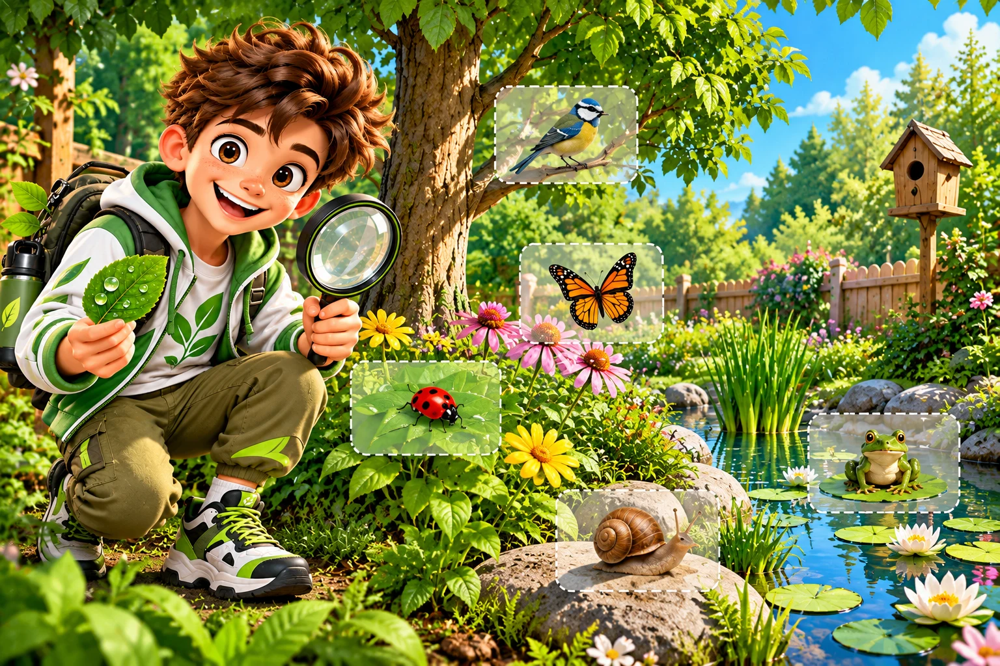
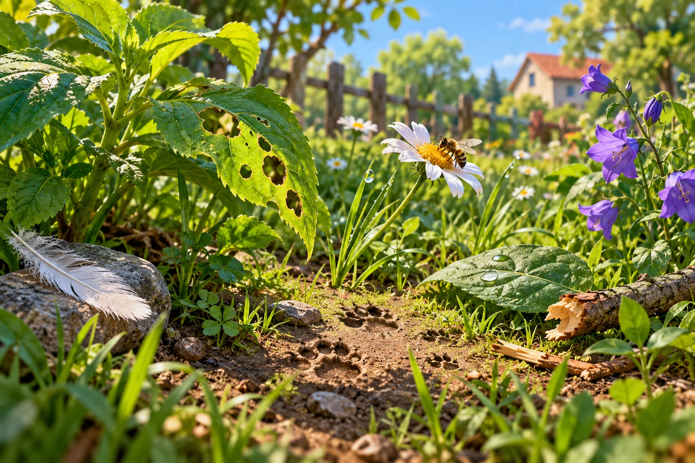
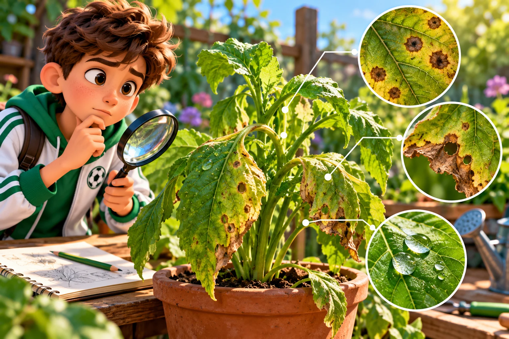
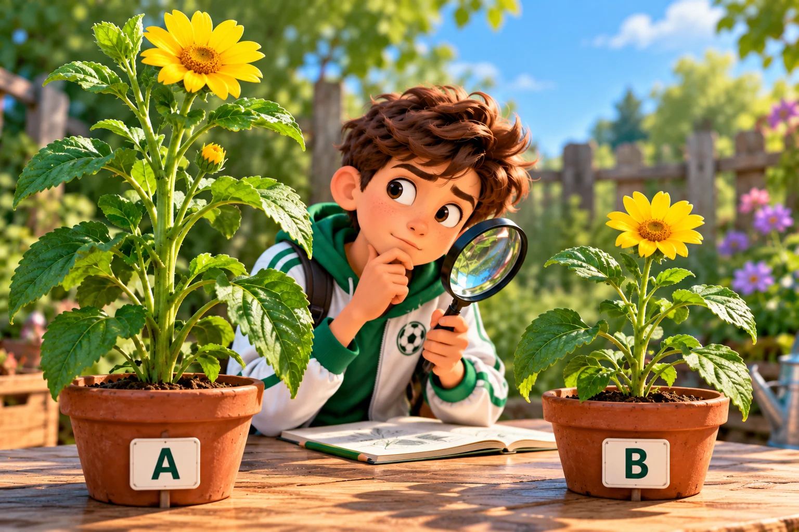
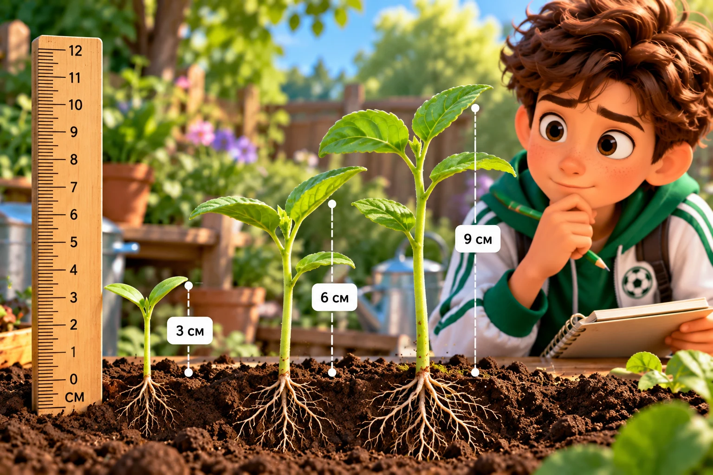
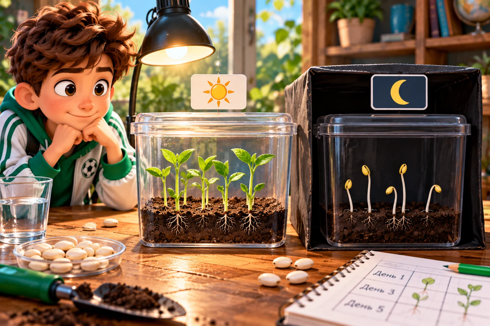
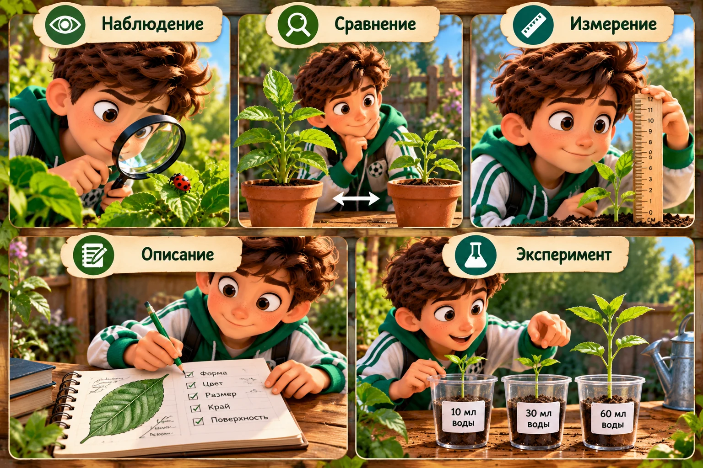
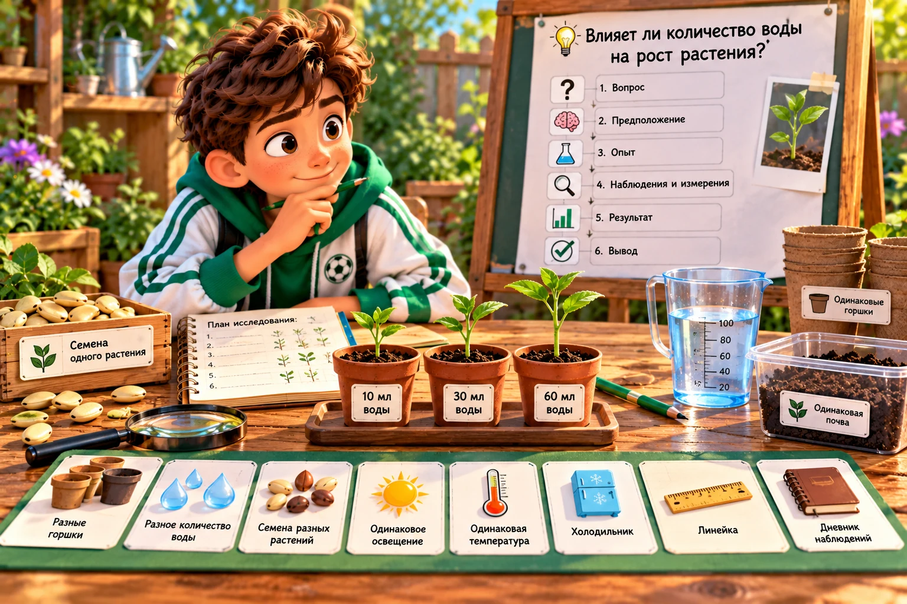

Как биологи изучают природу?
Егор, сегодня ты не просто ученик — ты исследователь. Биолог задаёт вопрос, собирает доказательства и только потом делает вывод.

🔎 Исследование 1. Кто побывал в саду?
На поляне остались следы. Перетащи названия 5 улик прямо на соответствующие места картинки: повреждённый лист, следы на земле, перо, капли воды и сломанную веточку. На телефоне можно нажать на слово, затем на нужное место.

👁 Исследование 2. Наблюдение или предположение?

Нажми на каждое утверждение и выбери, что это: факт, который можно увидеть, или объяснение причины.
🔍 Исследование 3. Сравниваем

Сначала выбирает один и тот же признак у двух объектов, а затем отмечает: одинаков он или различается.
Рассмотри растения A и B. Для каждого признака реши: РАЗЛИЧАЕТСЯ он у растений или ОДИНАКОВЫЙ. За каждый верный ответ — ⚽ гол.
Чтобы сравнить два объекта, биолог выбирает один и тот же признак и проверяет его у обоих объектов. Так можно точно определить, чем объекты похожи и чем отличаются. Сравнение помогает делать вывод не по впечатлению, а по конкретным признакам.
📏 Исследование 4. Измеряем

Какой проросток самый высокий и на сколько сантиметров он выше самого маленького?
🧪 Исследование 5. Ставим эксперимент

Хотим проверить влияние света. Что должно различаться у двух групп?
🧭 Пять инструментов биолога

Определи метод в каждой ситуации. За каждую ситуацию — отдельный гол.
🎬 Смотрим как исследователь
Какие методы используют биологи?
Чем наблюдение отличается от эксперимента?
Для чего исследователю нужны измерения?
🏆 Главное задание. Ты — руководитель лаборатории

Вопрос: влияет ли количество воды на рост растения? Выбери условия, которые нужны для честного исследования.
А теперь собери порядок исследования:
⚽ Мини-тест: думаем как биолог
🏁 Исследование завершено!
Теперь ты умеешь наблюдать, сравнивать, измерять, описывать и ставить эксперимент.
⚽ 0 / 26 голов
Но что делать, если объект настолько мал, что его невозможно рассмотреть глазами?